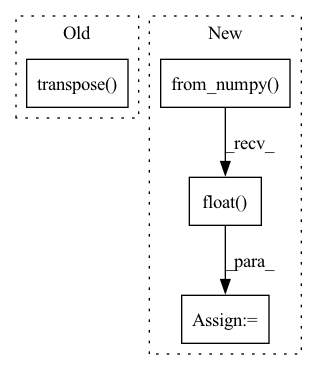

Pattern ID :7894
Before Change
torch.tensor
//
return torch.from_numpy(img.transpose( 2, 0, 1) ).float()
After Change
import torch
img = img.transpose((2, 0, 1))
img = torch.from_numpy(img).float()
if img.max() > 1:
img /= 255
return imgIn pattern: SUPERPATTERN
Frequency: 3
Non-data size: 4
Instances Fragment ID: 28090111
Project Name: obss/sahi
Commit Name: 1666b4b318ac7bf2ce857a98e4528705ba1e802f
Time: 2022-05-28
Author: 34196005+fcakyon@users.noreply.github.com
File Name: sahi/utils/torch.py
M Class Name: AnonimousClass
N Class Name: AnonimousClass
M Method Name: to_float_tensor(1)
N Method Name: to_float_tensor(1)
M Parent Class:
N Parent Class:
M File Name: sahi/utils/torch.py
N File Name: sahi/utils/torch.py
M Start Line: 21
M End Line: 21
N Start Line: 44
N End Line: 57
Before Change
image0 = image.copy()
image = letterbox(image, input_shape, stride=32, auto=False)[0]
image = image.transpose( (2, 0, 1)) [::-1]
image = np.ascontiguousarray(image, dtype=np.float32)
image = image
image /= 255After Change
pred = self.model.run([self.model.get_outputs()[0].name], {input_name: processed_image})[0]
// Run Pytorch model
else:
processed_image = torch.from_numpy( processed_image) .to(self.device)
// Change image floating point precision if fp16 set to true
processed_image = processed_image.half() if self.fp16 else processed_image.float()
pred = self.model(processed_image, augment=False)[0]
pred = pred.detach().cpu().numpy()
if isinstance(pred, np.ndarray):
pred = torch.tensor(pred, device=self.device) Fragment ID: 28090117
Project Name: augmentedstartups/as-one
Commit Name: 79f3ea97d63f873008f3ad548f1428f07f4d9dae
Time: 2022-09-07
Author: ajmair.kashif@axcelerate.ai
File Name: asone-linux/code/asone/detectors/yolor/yolor_detector.py
M Class Name: YOLOrDetector
N Class Name: YOLOrDetector
M Method Name: detect(8)
N Method Name: detect(8)
M Parent Class:
N Parent Class:
M File Name: asone-linux/code/asone/detectors/yolor/yolor_detector.py
N File Name: asone-linux/code/asone/detectors/yolor/yolor_detector.py
M Start Line: 38
M End Line: 72
N Start Line: 70
N End Line: 109
Before Change
dd_feat = delta(fbank_feat, 2)
// concat above three features
fbank_feat = np.concatenate((fbank_feat, d_feat, dd_feat), axis=1) // dim=120
fbank_feat = fbank_feat.transpose( [1, 0])
return fbank_feat
@property
def feature_dim(self):After Change
n_frame_shift = n_shift / num_point_ms
dither = dither if self.train else 0.0
waveform = torch.from_numpy(np.expand_dims(samples, 0)).float()
// 计算Fbank
mat = fbank(waveform,
num_mel_bins=n_mels,
frame_length=n_frame_length,
frame_shift=n_frame_shift, Fragment ID: 28090112
Project Name: yeyupiaoling/masr
Commit Name: 690028cdb4bf033088b71e14cc6bd55d48998561
Time: 2022-08-27
Author: yeyupiaoling@foxmail.com
File Name: masr/data_utils/featurizer/audio_featurizer.py
M Class Name: AudioFeaturizer
N Class Name: AudioFeaturizer
M Method Name: _compute_fbank(8)
N Method Name: _compute_fbank(5)
M Parent Class: object
N Parent Class: object
M File Name: masr/data_utils/featurizer/audio_featurizer.py
N File Name: masr/data_utils/featurizer/audio_featurizer.py
M Start Line: 131
M End Line: 144
N Start Line: 144
N End Line: 162